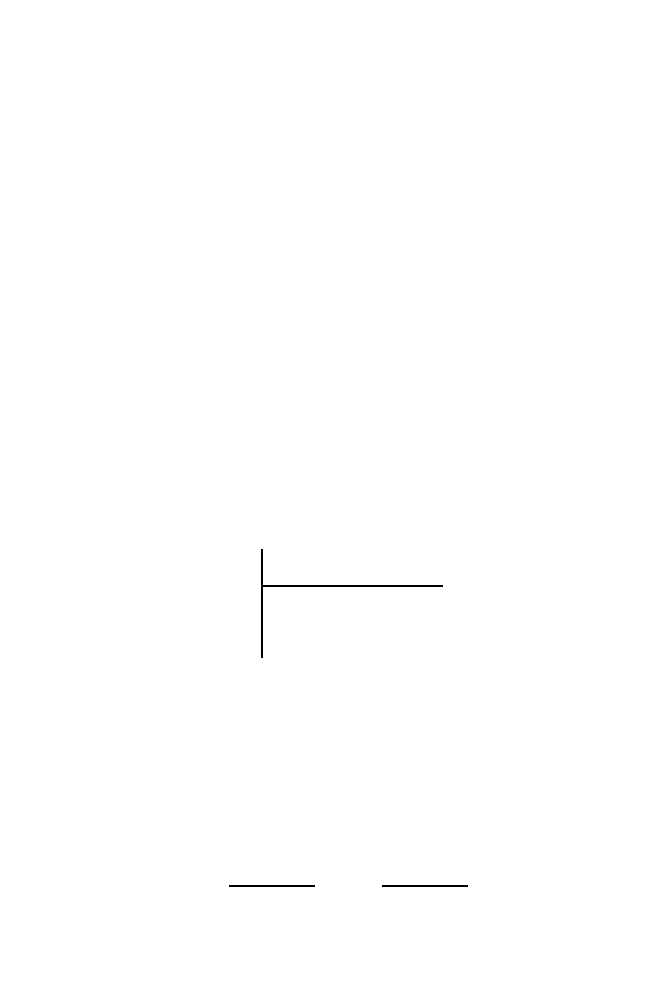

252
9 Signals in DNA
are quite short, and therefore they are likely to occur by chance in long lengths
of sequence.
Our probabilistic description has not taken into account the
distributions
of the sites along the DNA although typical values for locations of
GC
boxes,
CAAT
boxes, and
TATA
boxes relative to the transcriptional start sites are
known (Chapter 14.4.2). The spacing (or alternatively density) of candidate
transcription factor binding sites is additional information that can be used for
assessing whether they have been correctly identified. This sort of information
can be incorporated in
hidden Markov models
(not discussed in this book).
Clearly, signals are only one set of features that describe eukaryotic genes,
but they are an important component of gene-finding tools. Eukaryotic gene
finding is discussed at greater length in Chapter 14.
9.6 Using Scores for Classification
We have described how to represent signals in probabilistic terms and how to
produce scores for instances of any signal. The scores can be used to classify
any candidate string into one of two categories: sites or nonsites. There are two
types of errors that can result from this procedure. Let the
null hypothesis
H
be that the sequence to be tested is a site. A
Type I error
is one that
classifies a site as a nonsite (i.e., a false negative, rejecting
H
when it is true).
A
Type II error
is one that classifies a nonsite as a site (a false positive,
failing to reject
H
when it is false):
Assigned class is:
H
is:
True
False
True
correct
Type I error
False
Type II error
correct
The performance of a classification method is often described in terms of
sensitivity
(
Sn
, the proportion of actual features detected) and
specificity
(
Sp
, the proportion of predicted features that are real). In terms of Type I
and Type II errors, we have
Sn
= 1
−
P
(Type I error)
,
Sp
= 1
−
P
(Type II error)
.
If #TP is the number of true positive predictions, #FP is the number of false
positive predictions, #TN is the number of true negative predictions, and
#FN is the number of false negative predictions, then
Sn
≈
#TP
#TP + #FN
,
Sp
≈
#TN
#TN + #FP
.
(9.11)